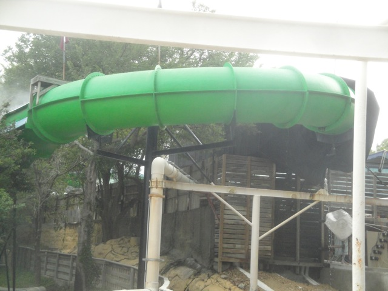
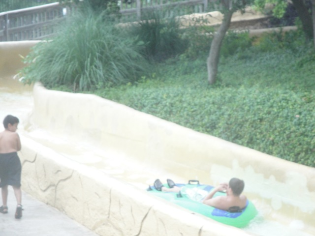
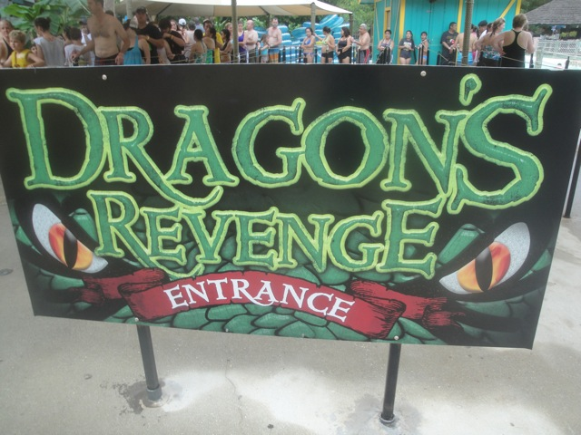

| |
Dragon's Revenge Review

We're here at Schlitterbahn, and we're here to ride one of their famous uphill water coasters, and by far, the better one, Dragon's Revenge. Master Blaster may be the famous one, but this slide is freaking awesome with just all the cool effects it has. This slide has music, lighting, spinning tunnels, fog, and fake fire. It just has a ton of fun stuff. So let's go. You wait in line, get in your tube (luckily, there's no stairs to climb), and you're off. You essentially float a bit, hit some LIMs, and are sort of launched up a hill, and another hill. This I guess is supposed to be our lifthill. And then we head into a tube, and head around a tight turn. Wee. We then head out back into daylight, head down a small drop and rise back up again. And BAM!!! We head into another tunnel. That quickly fades as that's just a turn before we wind up another hill. It's not fast or crazy at this point, but I'm just really enjoying all the hills. And with us going uphill this much, this should lead to something good. We then head inside again. We go around some turns, and BOOM!!! Flashly lights. Ladies and gentlemen, we now have lights. We now go back into the light, turn out, rise up another hill, go around another enclosed turn, up another hill, go inside and...FIRE!!! WE HAVE FIRE!!! Now it's obviously fake fire, but nevertheless, we now have fire. Hooray for waving orange and yellow paper on a water slide!!! =) And when we have that fire, we hit some LIMs and speed up into a turn. BAM!! WOW!! Now this is really starting to be a good ride. And now we drop. WEE!!!! It's definetly my favorite water slide at Schlitterbahn (not counting the Tube Chutes). I just love all the effects and just how intersting and unique a slide it is. Even if half the ride is just sort of this weird lifthill, I still really enjoy it. Do NOT skip this ride if you are going to Schlitterbahn. This is something to really enjoy. =)
8/10
Location: Schlitterbahn (New Braunfels)
Opened: 1994
Built by: Schlitterbahn
Last Ridden: July 15, 2013
Dragon's Revenge Photos


|